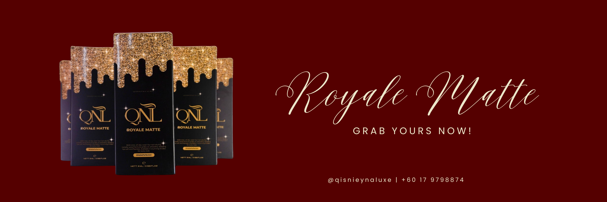
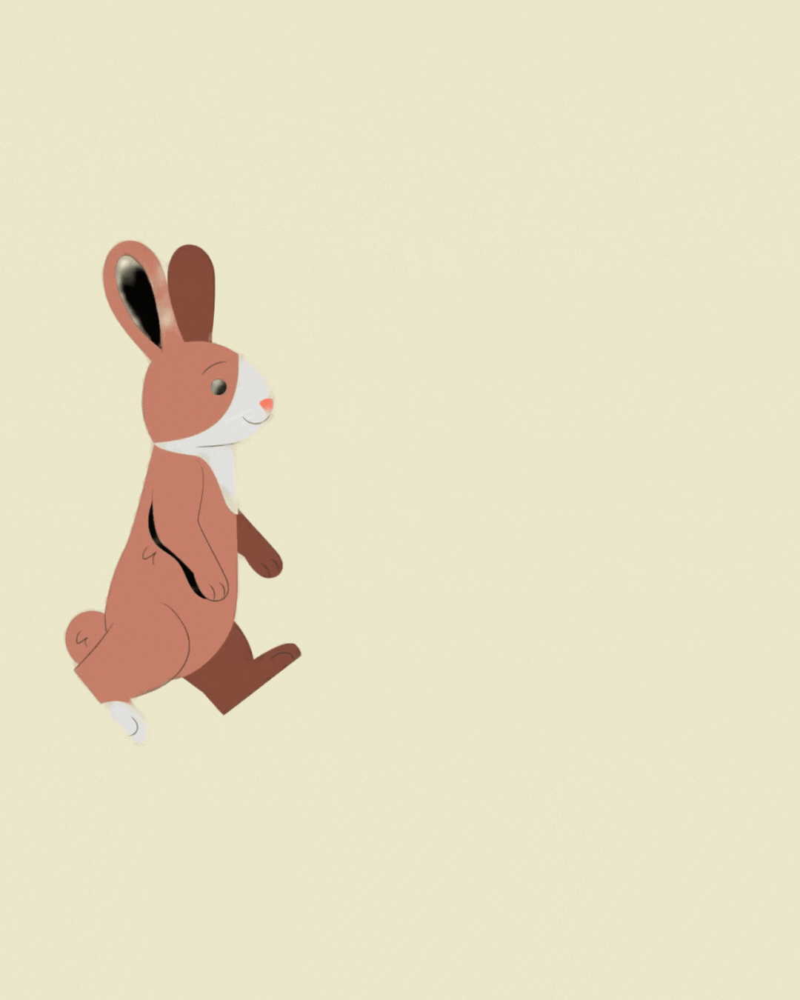
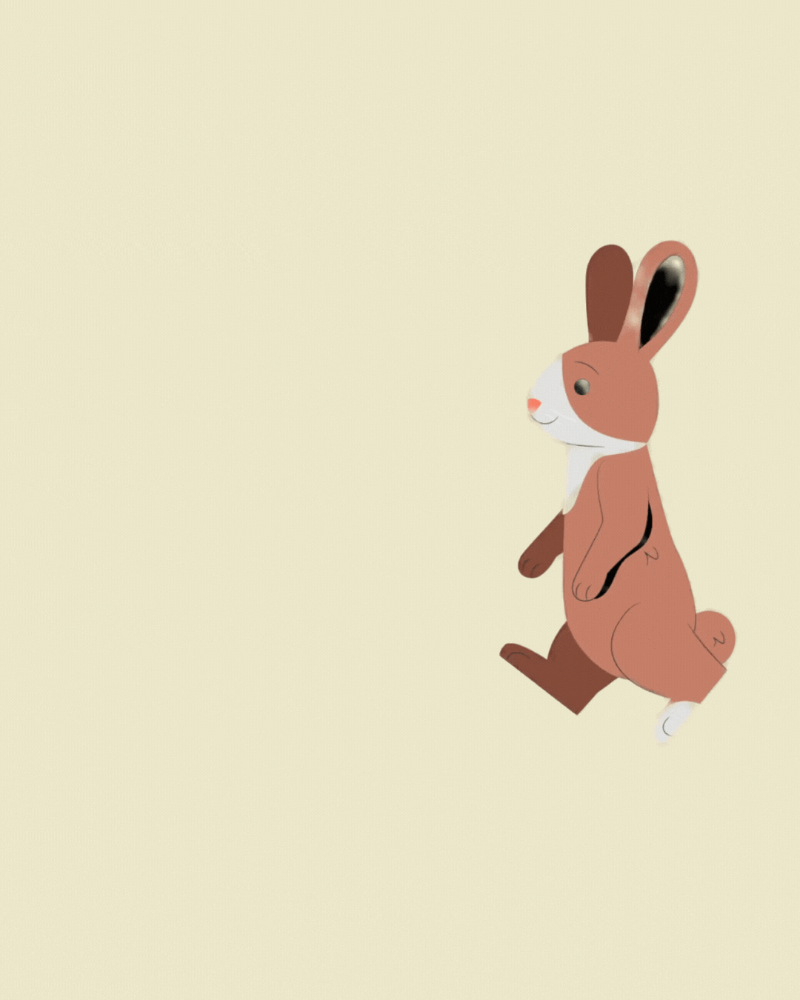
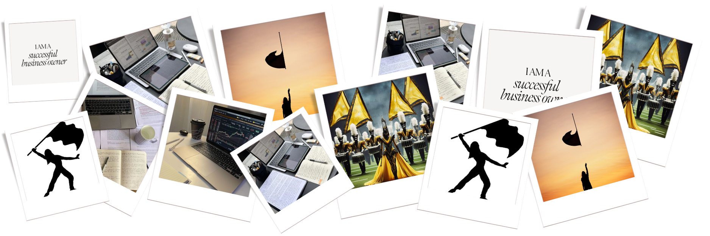

School Leadership Experience
School Prefect – SMK Tengku Mahmud, Besut, Terengganu
During my secondary school years, I served as a school prefect, where I was entrusted with responsibilities related to student discipline, event assistance, and daily school operations. This role strengthened my leadership skills, sense of responsibility, and confidence in communicating with students and teachers. It was one of the earliest experiences that shaped my character, discipline, and professionalism.

Entrepeneurial Experience
Founder - Qisnieyna Luxe
I founded Qisnieyna Luxe with a vision to create a cosmetic brand that empowers women and celebrates confidence and individuality. Building this brand from the ground up has allowed me to gain hands-on experience in branding, product planning, marketing strategies, and business management. This journey has not only developed my entrepreneurial mindset but also taught me resilience, patience, and self-belief.



Professional Experiences
Sales & Marketing (Part-Time)
I gained experience in sales and marketing through part-time work, where I assisted customers, promoted products, and supported daily sales operations. This role enhanced my communication skills, persuasion techniques, and understanding of customer behavior, while teaching me the importance of professionalism and adaptability in the workplace.
Freelance Designer
As a freelance designer, I create visual content such as posters, branding materials, and social media designs. This experience has allowed me to work with different styles, understand client needs, and translate ideas into meaningful visuals. It has strengthened both my creativity and time management skills.
Web Designer
I develop simple websites using HTML and CSS, focusing on clean layouts, aesthetics, and user-friendly designs. Through personal and small projects, I continue to explore how digital platforms can be used to build identity, communicate ideas, and support business growth.
Co-Curricular Experience
Colorguard - Brass Band UiTM Machang
As a member of the Colorguard team, I actively participate in training sessions and university performances. This involvement has developed my discipline, teamwork, coordination, and stage confidence, while also nurturing my appreciation for performance arts and collaborative creativity.
